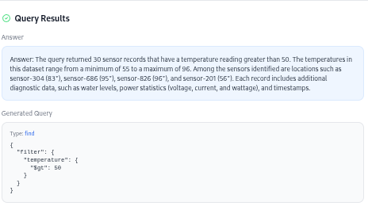
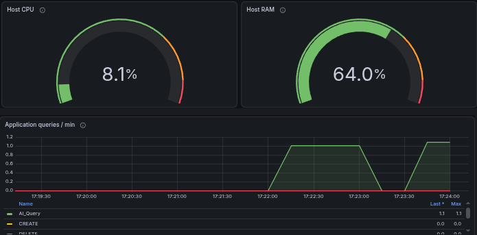

DATABASE OBSERVABILITY / FULL-STACK PROJECT
Monitoring
a MongoDB application.
Inspect MongoDB records, ask a question about them, and follow the activity those requests create. StreamWatch connects data exploration with the health of the application around it.
How do we understand a document database and the app using it?
React · FastAPI · MongoDB · Prometheus · Grafana
–2026 · Full-stack application
Instrumentation, monitoring integration, and the React workspace
Why the records
aren’t the whole story.
MongoDB’s document model supports nested structures and optional fields. That flexibility is useful as data changes, but inspecting a collection only tells you what is stored.
You also need to understand how the application uses that data: which requests arrive, how long responses take, and where failures occur. Those signals give you a starting point for investigating a problem while it is happening.
A slow sensor-reading request is a simple example. The document alone cannot explain the delay; request activity and timing help narrow down where to look. That need shaped the workspace.
Data and monitoring
take different paths.
FastAPI is the junction: it serves data to React and exposes an instrumentation endpoint for Prometheus. Grafana turns that second path into a view of activity over time.
Architecture view · data flow and monitoring flow
Application health
Request counts, response timings, and outcomes help show whether the application is keeping up with the work it receives.
Monitoring panels
Time-series panels make changes in traffic and response behavior visible across a session, alongside host resource use.
AI-assisted querying
The generated MongoDB query stays visible beside its results, so the answer can be inspected.
Explore the data.
See the activity.
One local session, viewed through a query result and the activity recorded by the monitoring stack.




Selected panels are grouped for readability. Open an image for its full screenshot.
Getting query activity
into Grafana.
The first version sent query context through Prometheus labels so it could appear in Grafana. Each different question or result could create another time series, making that approach harder to maintain.
I changed the split: metrics track counts, latency, and outcomes; MongoDB history holds individual requests. The dashboard stays useful as the questions change.
A closer look at the integration
What reaches the metrics endpoint.
The backend exports numeric counters and distributions at /metrics. Labels use a fixed set of categories: operation type, outcome, request direction, and route templates. A route such as /api/sensor-data/{id} groups document requests together without creating a separate series for each ID.
Keeping a request inspectable.
AI Analyst history stores the question, generated query, result, and response. I also fixed an early return that skipped successful-query bookkeeping. Persisting that history before returning lets a completed request remain available for later inspection.
Reading the dashboard.
Query rate counts instrumented application operations. CPU and RAM describe the machine running the backend. Response-time histograms and AI outcomes add context when activity changes; the per-request explanation remains in the application history.
Bringing the panels into the workspace.
MetricFrame.jsx builds panel URLs using the active theme. Vitals.jsx lazily embeds a selection of panels and links to the full dashboard, so a visitor can start with the essentials and open the wider view when needed.